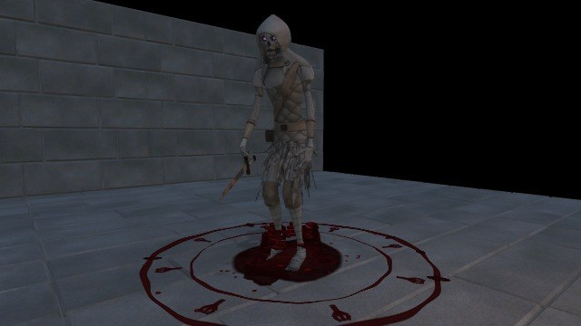
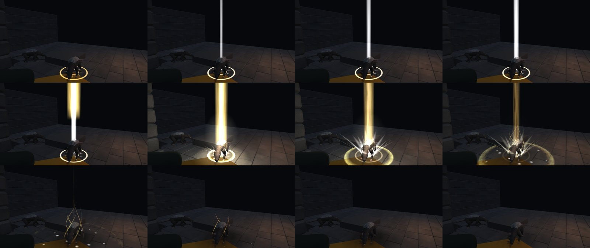
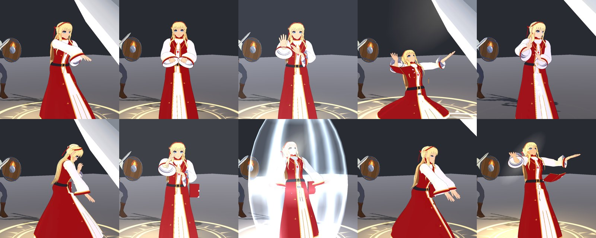

Effects · new
Blood Mage spells
The mage cuts her palm and the blood forms a runic circle; five spells rise out of it, each with its own runes. Dark and wet while working, dry stains after.
See the blood spells →
Effects · new
Spell effects v002
Smite and the priest kit redrawn as flowing light with burning edges, inspired by research into Final Fantasy VII Remake's spells. Both approved at 8.1.
See the new spells →
Character · new
The Warrior in motion
His strike, shield bash, taunt, guard, dodges and stagger, with the steel arc following his blade. In-game footage at the game camera's angle.
Watch him fight →
Animation · new
Serelle casts her spells
Ten Priest spells, each with its own movement timed to its effect, a prayer book for the long prayers, broken prayers and hits. In a test build of the game.
Watch her cast →
Character · new
The Warrior, armed
The male adventurer with his sword and shield: draws, strikes, guards, bashes, taunts, dodges, staggers and falls. He is the player when you choose the Warrior.
See him fight →
Game system · new
Main menu
A lantern-lit 3D menu from your concept: an iron lantern on a dungeon wall, a title the flame reveals, a real candle flame, worn oak and bronze.
See the menu →
Character · new
Serelle, the priest
The first character built from Eve: golden hair with a half-up braid, white robe, crimson vestment. She is your companion whenever the companion is the Priest.
Meet Serelle →
Enemy · in progress
Risen, the first undead
A dead adventurer risen from the dungeon floor, built from Enosh, with its own shamble, slash and death. Realistic horror rather than anime.
See the Risen →
Equipment · in progress
Starting gear
Warrior and Priest starter kits shared by Eve and Enosh, with armour that hides the body under it and long hair that shows under hoods.
See the gear →
Game system · new
Ragdoll on defeat
A defeated character falls under physics, away from the blow, and settles; a revive blends it back into its animation.
Watch the fall →
Game system · new
Dialogue box
Conversations with typing, choices and linked lines now run in the game. Walking, combat and the camera pause while the box is open.
Read a line →